Natuurbakker in Ede
Brood van meel, water en zeezout.
Zuurdesem- en voordeegbrood dat de tijd krijgt. Gebakken in een officierspaardenstal uit 1908 op de Mauritskazerne, met een bakkerscafé en terras ernaast.
Open woensdag tot en met zaterdag, 09:00 tot 16:00 uur
Verbindelaarsweg 90, Ede
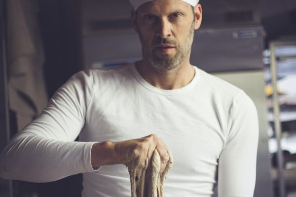
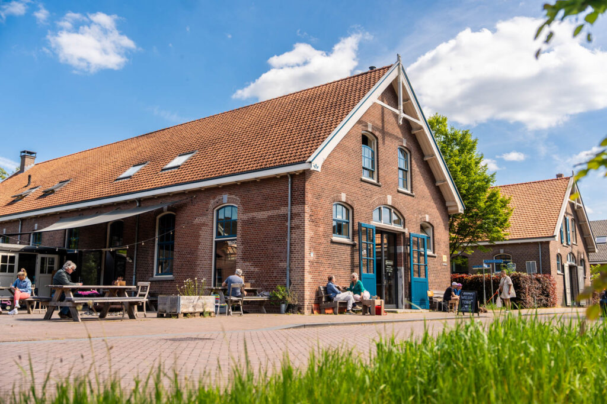
Lekker en gezond brood neemt zijn tijd.
Daarom bestel je uiterlijk een dag van tevoren, vóór 07:00 uur. De volgende dag ligt je bestelling voor je klaar in onze winkel op de Mauritskazerne. Voor losse verkoop loop je gewoon binnen.
Zo bestel je
Mail je bestelling en de dag waarop je hem ophaalt naar ons, of bel even.
Op de schappen
- Levain Blondzuurdesem
- Granen & Zadenzuurdesem
- Pain Grisvoordeeg
- Houthakkerzuurdesem
- Noten & Vruchtenspelt en eenkoorn
- Roggebroodzuurdesem
- Rozijnenbroodvoordeeg, vegan
- Spelt & Eenkoornzuurdesem
- Volkoren Haverzemelenzuurdesem
- Rebeccabrood
- Stokbrood
- Petit Pain Gris
- Rozijnenbolletjes
Verder in de winkel: croissants en viennoiserie, taarten en cakes, broodbeleg en meer goeds.
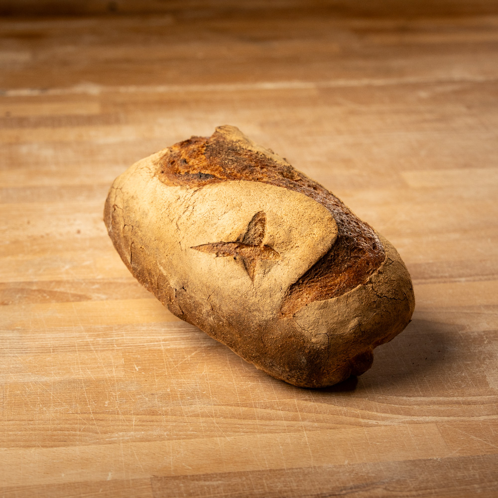
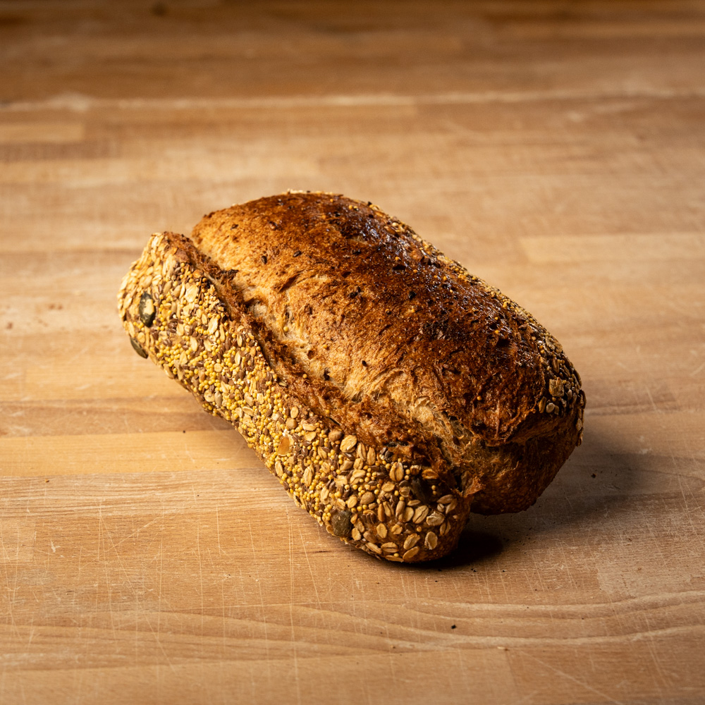
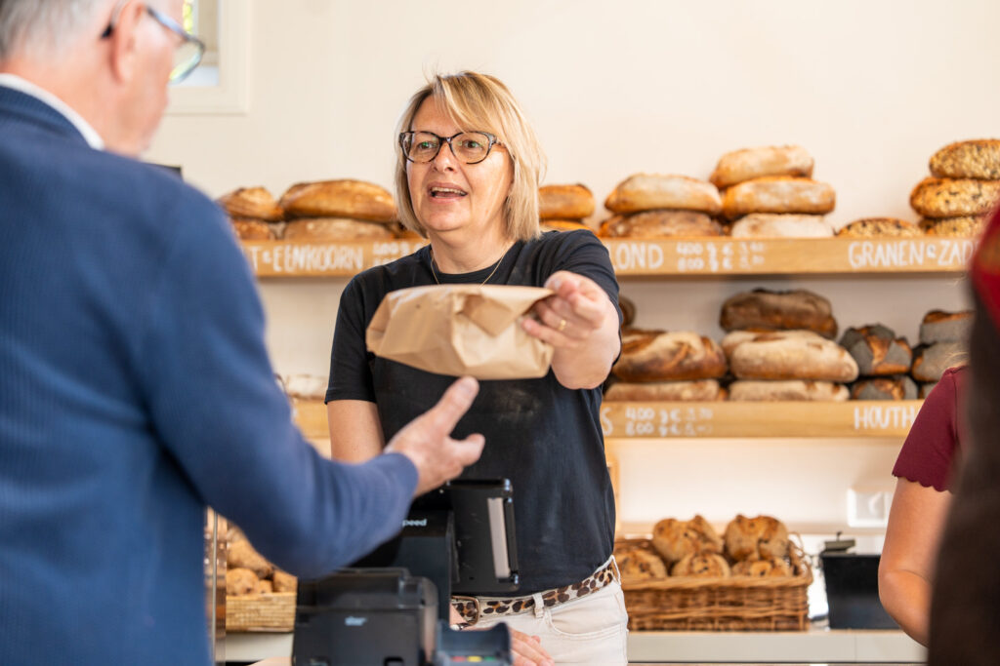
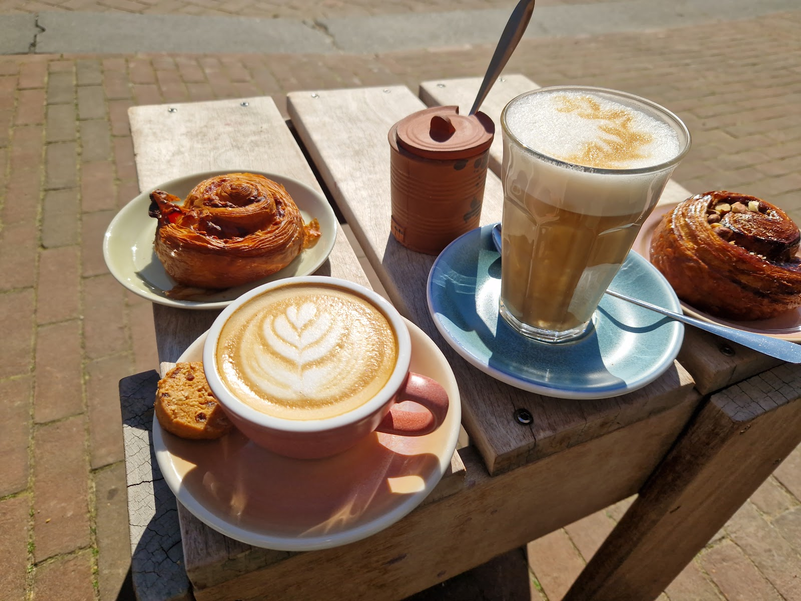
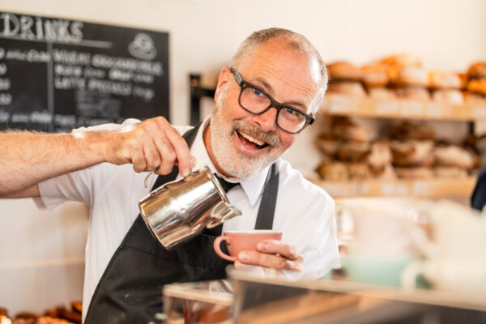
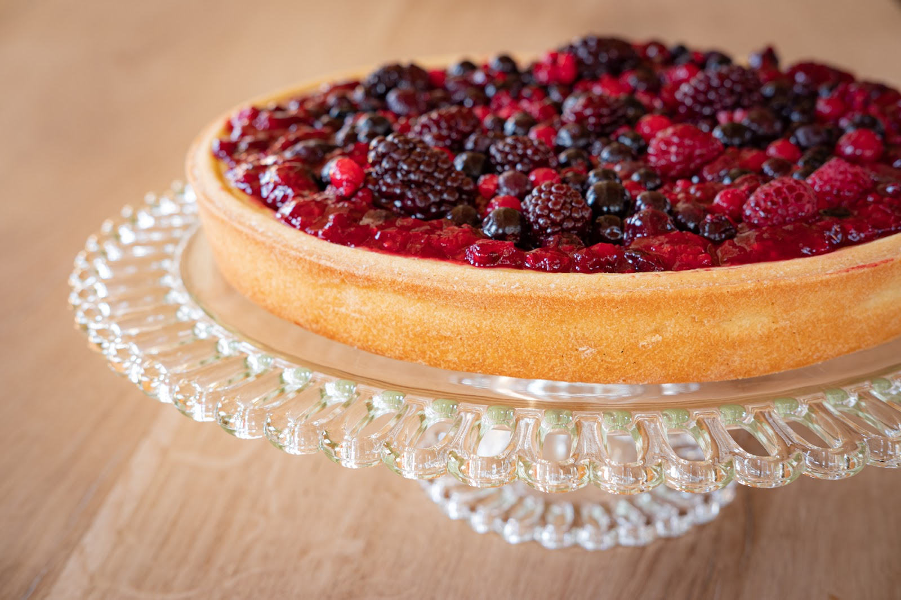
Bakkerscafé & terras
Geniet van onze versgebakken lekkernijen en goede koffie, binnen in het bakkerscafé of buiten op het terras. Voor een tussendoortje of een uitgebreide lunch.
Woensdag tot en met zaterdag, 09:00 tot 16:00 uur.
“Ede heeft prachtige oude kazernegebouwen. En in zo’n gebouw vind je een verborgen parel: Jorisbrood.”
“De plek is geweldig. Het is er erg gezellig en het ruikt er heerlijk. Alles is echt lekker. De cappuccino is lekker, de fruitcheesecake is super. Het lupinebrood is 🚀.”
“Geweldig echt heerlijk brood taart. Het voelt heel erg goed daar te eten. Super lieve mensen.”
“kwaliteit brood, en ze hebben ook nog wat andere producten in de schappen die er goed uitzien zoals de jam, of koffiebonen.”
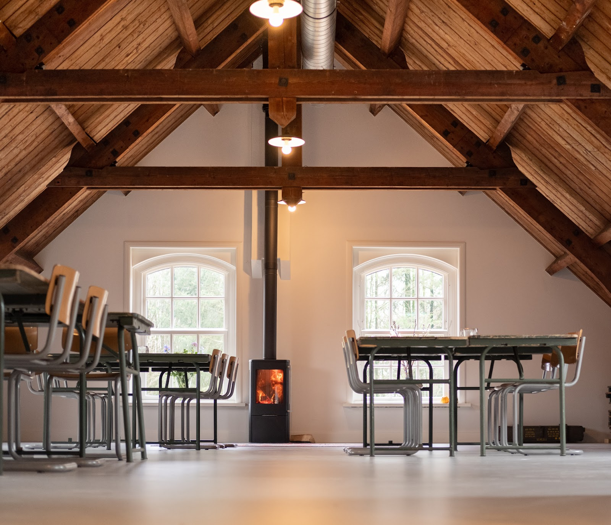
Boven de Oven
Vergadering, training, off-site, strategie- of heidag? Op de zolder van de paardenstal werk je onder de oude spanten, bij de houtkachel, met de geur van vers natuurbrood uit de bakkerij eronder.
Vraag naar de vergaderruimte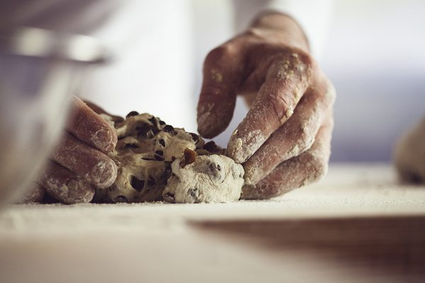
Uit een bakkers- en houthakkersfamilie
Joris van Voorthuizen is in 1971 geboren in Lunteren, in de Gelderse Vallei. Een buitenjongen uit de bakkers- en houthakkersfamilie Van Voorthuizen, die verraste met een carrière in het bedrijfsleven. Nu staat hij als natuurbakker in zijn eigen bakkerij.
Bij Jorisbrood draait alles om natuurlijke smaakontwikkeling: zuurdesem, tijd en de eenvoud van meel, water en zeezout.
De bakkerij zit in een officierspaardenstal uit 1908 op het voormalig defensieterrein in Ede. Voor het nieuwe leven dat we het pand gaven, kregen we het Restauratiefonds Compliment 2020.
Te zien bij onder meer BinnensteBuiten met chef-kok Alain Caron, Verrot Lekker met Christian Weij en Omroep Gelderland.
Jorisbrood buiten de Mauritskazerne
Bestelling ophalen
Remeker / De Groote Voort, Lunteren
vrijdag en zaterdag
Zet in de notitie bij je bestelling dat je hem bij Remeker ophaalt. Pain Gris, rozijnenbrood en Rebeccabrood kunnen we niet snijden: die zijn bij het inpakken nog te warm.
Los kopen
- Slagerij Van Leeuwen, Lunteren
vrijdag en zaterdag - Boerderijwinkel De Hoge Born, Bennekom/Wageningen
woensdag en zaterdag - De Wagenschuur, Ede, Kernhem
donderdag t/m zaterdag - De Gieterij, Wageningen
woensdag
Hier haal je geen webbestellingen op.
Op je bord
Geen zin om zelf te smeren? Deze restaurants en cateraars serveren Jorisbrood:
- EdEs Proeflokaal, Ede
- Eetkamer Lamens, Ede
- De Weverlodge, Otterlo
- Restaurant Cèpes, de Sterrenberg, Otterlo
- Restaurant GEIJT, Ede
- Cravings For Green, Ede
- Tesqua Health & Sports Centre, Ede
Kom langs door de blauwe deuren
Bakkerij, winkel, bakkerscafé en vergaderruimte op één adres.
Openingstijden
- maandag
- gesloten
- dinsdag
- gesloten
- woensdag
- 09:00 tot 16:00
- donderdag
- 09:00 tot 16:00
- vrijdag
- 09:00 tot 16:00
- zaterdag
- 09:00 tot 16:00
- zondag
- gesloten
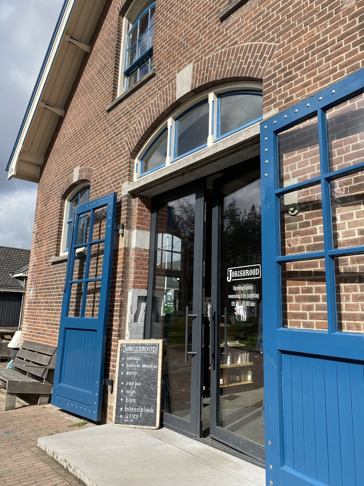